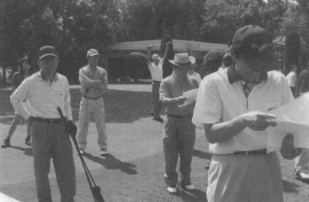
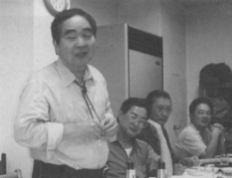
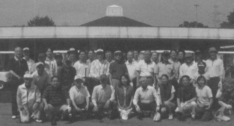

思い込めて、いざスタート！ 平成９年からは、熱意により春と秋の年２回聞かれるようになり、毎回３０～４０人が集まって親睦を深めています。
これまでにコンペに参加して下さった方々は、高中卒の方から高高平成卒の方まで延べ８００人を越えるでしょう。
そして、東京玉翠会ゴルフ同好会のゴルフコンペは今年で第２４回を迎えました。くしくも東京玉翠会総会と同じ回数を重ねたわけです。
第２４ 回東京玉翠会ゴルフ同好会は平成１８年５月２１日、千葉の市川京急ＣＣで聞かれました。
前日の荒れた天候とは違い、五月晴れのとてもすがすがしいゴルフ日和でした。
グリーンは微妙なアンジュレーションがあり、芝付もよく戦略性に富んだコースでした。
高松からそしてシンガポールからと３４名の自称腕自慢が集まり、トークとゴルフを楽しみました。

勝利のスピーチ 思いは？ 優勝は３３年卒の津森喬氏。
「ハンデとパートナーとお天気に恵まれました。」と優勝者の弁を残し、第２５回の幹事に引き継ぐことになりました。
参考までに昨年の開催日時とコースを記しておきます。
第２２回 平成１７年５月２２日 太平洋クラブ成田コース
第２３回 平成１７年１０月２３日 八千代ゴルフクラブ
ゴルフ同好会は東京玉翠会のゴルフ好きの集まりです。
「好きこそ物の上手なれ」 下手の 横好き」
といわれますが、どちらでもＯＫ! 「結果は間わず楽しもう」とクラブを片手に春と秋に集まっています。
参加御希望の方は、東京玉翠会ＨＰのゴルフ同好会あるいは小島までご連絡いただければ、コンペのお知らせをお送りします。

連絡先 : 小島豊子 ( 昭和43年卒 )toyoko@d08.itscom.net